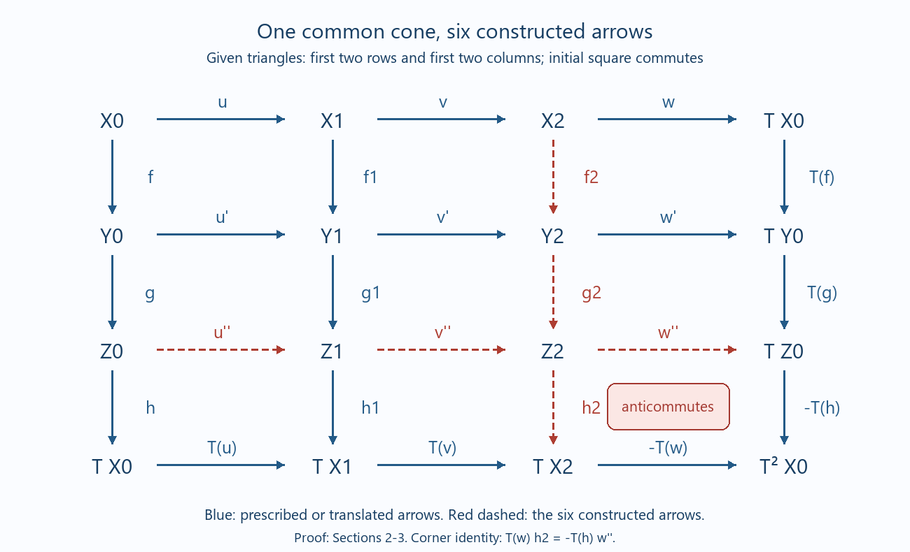

Draft lesson.
Signed three-by-three diagrams and double cones
Original text public domain (CC0).
A commutative square has two directions in which we can take cones. The octahedral axiom lets us complete both directions with the same final object. We construct every map in that completion, check its nine squares, and identify the minus sign in a concrete double-cone differential.
Use the universe convention of Universes and small categories. Let \(\mathcal D\) be a triangulated category, with additive translation equivalence \(T\). Composition is read from right to left. Our rotation convention sends \((r,s,t)\) to \((s,t,-Tr)\). Translations, coherent powers and universal triangle comparisons supplies the coherent inverse-translation comparisons. Split triangles, idempotent telescopes and semisimple structures, Section 3 proves that a translated distinguished triangle has arrows \((Tr,Ts,-Tt)\). We will also give the short rotation proof of this particular sign below.
1. The prescribed data and the signed conclusion
Suppose that the following four triangles, including their actual arrows, have already been chosen and are distinguished:
\[ \begin{aligned} X_0&\xrightarrow{u}X_1\xrightarrow{v}X_2\xrightarrow{w}TX_0,\\ Y_0&\xrightarrow{u'}Y_1\xrightarrow{v'}Y_2\xrightarrow{w'}TY_0,\\ X_0&\xrightarrow{f}Y_0\xrightarrow{g}Z_0\xrightarrow{h}TX_0,\\ X_1&\xrightarrow{f_1}Y_1\xrightarrow{g_1}Z_1\xrightarrow{h_1}TX_1. \end{aligned} \tag{1.1} \]The initial square is required to commute:
\[ u'f=f_1u. \tag{1.2} \]Theorem 1.1. There is an object \(Z_2\) and six arrows completing (1.1) to
\[ \begin{array}{ccccccc} X_0&\xrightarrow{u}&X_1&\xrightarrow{v}&X_2&\xrightarrow{w}&TX_0\\ f\downarrow&&f_1\downarrow&&f_2\downarrow&&Tf\downarrow\\ Y_0&\xrightarrow{u'}&Y_1&\xrightarrow{v'}&Y_2&\xrightarrow{w'}&TY_0\\ g\downarrow&&g_1\downarrow&&g_2\downarrow&&Tg\downarrow\\ Z_0&\xrightarrow{u''}&Z_1&\xrightarrow{v''}&Z_2&\xrightarrow{w''}&TZ_0\\ h\downarrow&&h_1\downarrow&&h_2\downarrow&&-Th\downarrow\\ TX_0&\xrightarrow{Tu}&TX_1&\xrightarrow{Tv}&TX_2&\xrightarrow{-Tw}&T^2X_0. \end{array} \tag{1.3} \]Each row and each column is distinguished. The eight squares outside the lower-right corner commute. The lower-right square anticommutes; equivalently,
\[ (Tw)h_2=-(Th)w''. \tag{1.4} \]The six constructed maps are \(f_2,g_2,h_2,u'',v'',w''\). The common corner \(Z_2\) is chosen as part of the conclusion. Neither a unique corner nor a functorial choice of all six maps is asserted.

Figure 1. Blue arrows belong to the prescribed data or their indicated translates; red arrows are constructed. The shaded square anticommutes. The indices in the figure mean the subscripts in (1.3). Sections 2–3 prove every displayed relation, using the octahedral axiom in Stacks, Definition 13.3.2 and the general construction in Stacks, Proposition 13.4.23. The two negative boundary labels are part of our stated rotation convention.
2. Two octahedra with a common middle cone
We first state precisely the form of the octahedral axiom used here. For composable arrows \(r:A\to B\) and \(s:B\to C\), suppose that distinguished completions have been specified as
\[ \begin{aligned} A&\xrightarrow r B\xrightarrow{p_r}Q_r\xrightarrow{e_r}TA,\\ A&\xrightarrow{sr}C\xrightarrow{p_{sr}}Q_{sr}\xrightarrow{e_{sr}}TA,\\ B&\xrightarrow s C\xrightarrow{p_s}Q_s\xrightarrow{e_s}TB. \end{aligned} \tag{2.1} \]TR4 supplies \(a:Q_r\to Q_{sr}\) and \(b:Q_{sr}\to Q_s\) for which
\[ Q_r\xrightarrow a Q_{sr}\xrightarrow b Q_s \xrightarrow{(Tp_r)e_s}TQ_r \tag{2.2} \]is distinguished, and
\[ ap_r=p_{sr}s,\qquad e_{sr}a=e_r, \qquad bp_{sr}=p_s,\qquad e_sb=(Tr)e_{sr}. \tag{2.3} \]Thus the axiom includes the four actual face identities for the three prescribed completions. We will use exactly this interface, rather than require a cone functor.
Put \(m=f_1u=u'f\). By TR1, choose a distinguished triangle
\[ X_0\xrightarrow m Y_1\xrightarrow d M\xrightarrow e TX_0. \tag{2.4} \]Apply (2.1)–(2.3) to \(u\) followed by \(f_1\), using the first and fourth triangles of (1.1) and (2.4). We obtain maps
\[ a:X_2\to M,\qquad b:M\to Z_1 \tag{2.5} \]and the distinguished triangle
\[ X_2\xrightarrow a M\xrightarrow b Z_1 \xrightarrow{(Tv)h_1}TX_2. \tag{2.6} \]Its face identities are
\[ av=df_1,\qquad ea=w,\qquad bd=g_1, \qquad h_1b=(Tu)e. \tag{2.7} \]Apply TR4 again, now to \(f\) followed by \(u'\), using the third and second triangles of (1.1) and the same (2.4). It supplies
\[ a':Z_0\to M,\qquad b':M\to Y_2 \tag{2.8} \]and the distinguished triangle
\[ Z_0\xrightarrow{a'}M\xrightarrow{b'}Y_2 \xrightarrow{(Tg)w'}TZ_0. \tag{2.9} \]The corresponding identities are
\[ a'g=du',\qquad ea'=h,\qquad b'd=v', \qquad w'b'=(Tf)e. \tag{2.10} \]Define two of the required maps by actual compositions:
\[ u''=ba':Z_0\to Z_1, \qquad f_2=b'a:X_2\to Y_2. \tag{2.11} \]For example, (2.7) and (2.10) already give
\[ u''g=g_1u',\quad (Tu)h=h_1u'', \qquad f_2v=v'f_1,\quad w'f_2=(Tf)w. \tag{2.12} \]These identities will be part of the final square check. They do not, by themselves, complete the middle square or choose the common final cone.
3. The third octahedron and all nine squares
Complete \(u''\) by TR1:
\[ Z_0\xrightarrow{u''}Z_1\xrightarrow{v''}Z_2 \xrightarrow{w''}TZ_0. \tag{3.1} \]Rotate (2.6) once. The result is the distinguished triangle
\[ M\xrightarrow b Z_1\xrightarrow{c}TX_2 \xrightarrow{-Ta}TM, \qquad c=(Tv)h_1. \tag{3.2} \]Apply TR4 to \(a':Z_0\to M\) and \(b:M\to Z_1\), with the three prescribed triangles (2.9), (3.1) and (3.2). Its two new maps will be denoted
\[ g_2:Y_2\to Z_2,\qquad h_2:Z_2\to TX_2. \tag{3.3} \]The resulting distinguished triangle is
\[ Y_2\xrightarrow{g_2}Z_2\xrightarrow{h_2}TX_2 \xrightarrow{-(Tb')(Ta)}TY_2. \tag{3.4} \]Since \(b'a=f_2\), its last arrow is \(-Tf_2\). Consequently (3.4) is exactly the rotation of
\[ X_2\xrightarrow{f_2}Y_2\xrightarrow{g_2}Z_2 \xrightarrow{h_2}TX_2. \tag{3.5} \]The if-and-only-if assertion in TR2 makes (3.5) distinguished. This argument does not replace \(T^{-1}TX_2\) by \(X_2\) without a comparison: it recognizes the literal rotation of (3.5), whose fourth vertex is already \(TX_2\).
The four face identities of this third octahedron are
\[ g_2b'=v''b,\qquad w''g_2=(Tg)w', \qquad h_2v''=(Tv)h_1, \qquad -(Ta)h_2=(Ta')w''. \tag{3.6} \]We now verify every square of (1.3), in row order. The first square is the hypothesis (1.2). The next seven equalities are
\[ \begin{aligned} f_2v&=b'av=b'df_1=v'f_1,\\ w'f_2&=w'b'a=(Tf)ea=(Tf)w,\\ u''g&=ba'g=bdu'=g_1u',\\ g_2v'&=g_2b'd=v''bd=v''g_1,\\ w''g_2&=(Tg)w',\\ h_1u''&=h_1ba'=(Tu)ea'=(Tu)h,\\ h_2v''&=(Tv)h_1. \end{aligned} \tag{3.7} \]In particular the middle square uses the third octahedron, through the first identity of (3.6). For the ninth square, use the last identity of (3.6) and both identities involving \(e\):
\[ \begin{aligned} (Tw)h_2 &=(Te)(Ta)h_2\\ &=-(Te)(Ta')w''\\ &=-(Th)w''. \end{aligned} \tag{3.8} \]The two actual paths in the lower-right square are \((-Tw)h_2\) and \((-Th)w''\); equation (3.8) says they are negatives of one another.
The first two rows and columns are the prescribed triangles. The third row is (3.1), and the third column is (3.5). Three rotations of a distinguished triangle with arrows \((r,s,t)\) give arrows \((-Tr,-Ts,-Tt)\). The vertex isomorphisms \((1,-1,1)\) turn these into \((Tr,Ts,-Tt)\). This proves distinguishedness of the last row and last column with exactly the two signs printed in (1.3). It also finishes the proof of Theorem 1.1. \(\square\)
4. A double cone whose differential records the sign
Here is a strict model in the homotopy category of complexes in an additive category \(\mathcal A\). The full cone, rotation and octahedron proofs in Chain homotopies, mapping cones and triangles, Sections 1–5 make \(K(\mathcal A)\) triangulated. The formulas below remain valid for bounded complexes; all sums are finite. A coordinate formula denotes a biproduct matrix and requires no underlying elements in \(\mathcal A\).
Take chain maps in a strictly commuting square
\[ \begin{array}{ccc} A&\xrightarrow u&B\\ f\downarrow&&q\downarrow\\ C&\xrightarrow p&D, \end{array} \qquad pf=qu. \tag{4.1} \]Use cochain differentials and \((TE)^n=E^{n+1}\), with \(d_{TE}=-d_E\). For \(r:E\to F\), the standard cone has differential
\[ \operatorname{Cone}(r)^n=F^n\oplus E^{n+1}, \qquad d(y,x)=(d_Fy+rx,-d_Ex). \tag{4.2} \]Choose the four given cones to be
\[ X_2=\operatorname{Cone}(u),\quad Y_2=\operatorname{Cone}(p),\quad Z_0=\operatorname{Cone}(f),\quad Z_1=\operatorname{Cone}(q). \tag{4.3} \]The cone maps induced by (4.1) are
\[ f_2(b,a)=(qb,fa), \qquad u''(c,a)=(pc,ua). \tag{4.4} \]They are chain maps: the only off-diagonal comparison in each case is precisely \(pf=qu\). Choose \(Z_2=\operatorname{Cone}(u'')\). In the ordered four summands
\[ Z_2^n=D^n\oplus B^{n+1}\oplus C^{n+1}\oplus A^{n+2}, \tag{4.5} \]its differential is
\[ d(d,b,c,a)= \bigl(d_Dd+qb+pc,\ -d_Bb+ua,\ -d_Cc-fa,\ d_Aa\bigr). \tag{4.6} \]For clarity, the four components of its square are
\[ \begin{aligned} &d_D^2d+(d_Dq-qd_B)b+(d_Dp-pd_C)c+(qu-pf)a,\\ &d_B^2b+(-d_Bu+ud_A)a,\\ &d_C^2c+(d_Cf-fd_A)a,\\ &d_A^2a. \end{aligned} \tag{4.7} \]They vanish by the chain-map identities and (4.1).
Taking cones in the other direction gives \(E=\operatorname{Cone}(f_2)\), whose order is \((D,TC,TB,T^2A)\) and whose differential is
\[ d_E(d,c,b,a)= \bigl(d_Dd+pc+qb,\ -d_Cc+fa,\ -d_Bb-ua,\ d_Aa\bigr). \tag{4.8} \]The map
\[ \sigma:E\longrightarrow Z_2, \qquad (d,c,b,a)\longmapsto(d,b,c,-a) \tag{4.9} \]is a chain isomorphism. Substitution into (4.6) gives the same four coordinates as applying \(\sigma\) to (4.8); its inverse is \((d,b,c,a)\mapsto(d,c,b,-a)\). Thus this comparison swaps the middle two summands and negates the doubly translated summand.
The remaining arrows are
\[ \begin{aligned} v''(d,b)&=(d,b,0,0),& w''(d,b,c,a)&=(c,a),\\ g_2(d,c)&=(d,0,c,0),& h_2(d,b,c,a)&=(b,-a). \end{aligned} \tag{4.10} \]The first line consists of the standard inclusion and projection for \(\operatorname{Cone}(u'')\). The second line is the inclusion for \(\operatorname{Cone}(f_2)\) followed by \(\sigma\), and its projection preceded by \(\sigma^{-1}\). Therefore both the third row and the third column are entire distinguished cone triangles with these actual maps. In these coordinates \(Tw\) selects the last coordinate of \(TX_2\), whereas \(Th\) selects the last coordinate of \(TZ_0\). Hence
\[ (Tw)h_2(d,b,c,a)=-a, \qquad (Th)w''(d,b,c,a)=a. \tag{4.11} \]This is the corner anticommutativity in a chain-level formula. The abstract proof of Sections 2–3 applies to any commuting square in a triangulated category, including squares that have no strictly commuting representatives of the form (4.1).
5. Two small examples that separate the hypotheses
A nonzero anticommuting corner. Let \(K\) be the complex with \(\mathbb Q\) in degree zero and zero elsewhere. In \(K^b(\mathrm{Vect}_{\mathbb Q}^{\mathrm{fd}})\), take \(X_0=K\) and \(X_1=Y_0=Y_1=0\), with all four initial maps zero. Choose standard cones. Then
\[ X_2=Z_0=TK,\quad Y_2=Z_1=0,\quad Z_2=T^2K. \tag{5.1} \]The initial connecting maps \(w,h\) are identities. Formula (4.10) gives \(w''=1\) and \(h_2=-1\), with the other constructed maps zero. The two lower-right paths in the displayed signed grid (1.3) are respectively \(1_{T^2K}\) and \(-1_{T^2K}\). These maps are different: the nonzero complex \(T^2K\) has zero differential, so no nonzero endomorphism is null-homotopic, and \(2\ne0\) in \(\mathbb Q\). The corner really anticommutes.
Four distinguished completions do not imply a commutative initial square. In the same category put \(X_0=X_1=Y_0=Y_1=K\), and take \(u=u'=f=1_K\), \(f_1=0\). TR1 supplies all four distinguished completions. But \(u'f=1_K\) and \(f_1u=0\). No choice of the six missing arrows can change this existing square. Thus (1.2) is an essential hypothesis even when all four triangles are distinguished.
6. Four graded exercises with complete solutions
Exercise 1 (basic: the nine relations). Write the eight commuting-square equalities of (1.3) and express its corner using the actual negative boundary arrows. Explain what becomes of the corner equality if every Hom group is annihilated by two.
Solution. The eight equations are
\[ \begin{gathered} u'f=f_1u,\qquad v'f_1=f_2v,\qquad w'f_2=(Tf)w,\\ u''g=g_1u',\qquad v''g_1=g_2v',\qquad w''g_2=(Tg)w',\\ (Tu)h=h_1u'',\qquad (Tv)h_1=h_2v''. \end{gathered} \tag{6.1} \]If \(P=(-Tw)h_2\) and \(Q=(-Th)w''\), the corner condition is \(P=-Q\), or \(P+Q=0\). When \(2x=0\) in each Hom group, \(-x=x\), so that same equality also reads \(P=Q\). This does not alter the construction or permit omission of (1.2); it makes a sign invisible in these particular groups. Example (5.1) over \(\mathbb Q\) shows that the two paths can be different when two does not vanish. \(\square\)
Exercise 2 (intermediate: cancellation in the triangle group). Let \(G(\mathcal D)\) be the free abelian group on isomorphism classes of objects, modulo the relations \([B]=[A]+[C]\) for distinguished triangles \(A\to B\to C\to TA\). Prove that either direction of the 3×3 construction gives
\[ [Z_2]=[Y_1]-[Y_0]-[X_1]+[X_0]. \tag{6.2} \]Solution. The prescribed columns give \([Z_0]=[Y_0]-[X_0]\) and \([Z_1]=[Y_1]-[X_1]\). The third row is distinguished, so \([Z_2]=[Z_1]-[Z_0]\), which is (6.2). Independently, the prescribed rows give \([X_2]=[X_1]-[X_0]\) and \([Y_2]=[Y_1]-[Y_0]\). The third column gives \([Z_2]=[Y_2]-[X_2]\), again (6.2). These are equalities in the explicitly defined quotient group; they are not object decompositions or uniqueness claims. In particular this computation supplies neither the six actual arrows nor the signed corner relation. \(\square\)
Exercise 3 (advanced: transport all the chosen cone presentations). Keep \(X_0,X_1,Y_0,Y_1\) and the four initial arrows fixed. Replace the four prescribed triangles by isomorphic distinguished completions, with isomorphisms fixing their first two vertices. Let their cone isomorphisms be
\[ \alpha:X_2\to\widetilde X_2,\quad \beta:Y_2\to\widetilde Y_2,\quad \gamma:Z_0\to\widetilde Z_0,\quad \delta:Z_1\to\widetilde Z_1. \tag{6.3} \]Transport a completed diagram without changing \(Z_2\). Verify the bottom-right sign with the actual maps.
Solution. The four triangle isomorphisms give
\[ \begin{gathered} \widetilde v=\alpha v,\quad \widetilde w=w\alpha^{-1}, \quad \widetilde v'=\beta v',\quad \widetilde w'=w'\beta^{-1},\\ \widetilde g=\gamma g,\quad \widetilde h=h\gamma^{-1}, \quad \widetilde g_1=\delta g_1,\quad \widetilde h_1=h_1\delta^{-1}. \end{gathered} \tag{6.4} \]Define the transported six arrows by
\[ \begin{aligned} \widetilde f_2&=\beta f_2\alpha^{-1},& \widetilde g_2&=g_2\beta^{-1},& \widetilde h_2&=(T\alpha)h_2,\\ \widetilde u''&=\delta u''\gamma^{-1},& \widetilde v''&=v''\delta^{-1},& \widetilde w''&=(T\gamma)w''. \end{aligned} \tag{6.5} \]These are the usual conjugations on each edge by its source and target isomorphisms. If an original square says \(sr=qp\), multiplication on the left by its target isomorphism and on the right by its source inverse proves the transported equality. This proves all eight commuting squares, including the middle one; the translated bottom vertices use \(T\alpha,T\gamma\) rather than the unshifted maps. For the corner, explicitly,
\[ \begin{aligned} (T\widetilde w)\widetilde h_2 &=(Tw)(T\alpha)^{-1}(T\alpha)h_2\\ &=(Tw)h_2=-(Th)w''\\ &=-(T\widetilde h)\widetilde w''. \end{aligned} \tag{6.6} \]The third row is transported by the vertex isomorphisms \((\gamma,\delta,1)\), and the third column by \((\alpha,\beta,1)\). Their last comparison maps are \(T\gamma,T\alpha\), precisely as in (6.5). Thus both triangles are distinguished, and their signed translated boundaries are distinguished by the rotation argument of Section 3. This proves the claim for the entire diagram. Such endpoint-fixing cone isomorphisms exist between distinguished completions of a fixed arrow by TR3 and the two-isomorphism comparison theorem proved in Translations, Section 6. The transport does not assert a unique choice of those isomorphisms. \(\square\)
Exercise 4 (advanced: a contractible common corner). In (4.1) take complexes concentrated in degree zero, with
\[ A=\mathbb Q,\quad B=C=\mathbb Q^2,\quad D=\mathbb Q^3, \tag{6.7} \]and maps
\[ u(a)=f(a)=(a,0),\quad q(b_1,b_2)=(b_1,b_2,0),\quad p(c_1,c_2)=(c_1,0,c_2). \tag{6.8} \]Construct a contracting homotopy for the common double cone and identify the two maps on the cokernels of the four injections.
Solution. The square commutes because both composites send \(a\) to \((a,0,0)\). Formula (4.6) gives the three nonzero degrees of \(Z_2\):
\[ \mathbb Q\xrightarrow{\partial^{-2}}\mathbb Q^2\oplus\mathbb Q^2 \xrightarrow{\partial^{-1}}\mathbb Q^3, \quad \begin{cases} \partial^{-2}(a)=(a,0,-a,0),\\ \partial^{-1}(b_1,b_2,c_1,c_2)=(b_1+c_1,b_2,c_2). \end{cases} \tag{6.9} \]Their composite is zero. Define a degree-minus-one homotopy by
\[ \begin{aligned} H^0(d_1,d_2,d_3)&=(d_1,d_2,0,d_3),\\ H^{-1}(b_1,b_2,c_1,c_2)&=-c_1, \end{aligned} \tag{6.10} \]and set its other components to zero. At degree zero, \(\partial^{-1}H^0=1\). At degree minus two, \(H^{-1}\partial^{-2}(a)=a\). At degree minus one,
\[ \begin{aligned} (\partial^{-2}H^{-1}+H^0\partial^{-1})(b_1,b_2,c_1,c_2) &=(-c_1,0,c_1,0)+(b_1+c_1,b_2,0,c_2)\\ &=(b_1,b_2,c_1,c_2). \end{aligned} \tag{6.11} \]Thus \(\partial H+H\partial=1\). The identity is null-homotopic, so \(Z_2\) is a zero object in the homotopy category: every morphism to or from it is zero there, by composition with its zero identity.
The cokernels of \(u,p\) are the second coordinate of \(B\) and the second coordinate of \(D\), respectively. The map induced by \(q\) sends \(b_2\) to that same coordinate, hence is the identity \(\mathbb Q\to\mathbb Q\). Similarly, the cokernels of \(f,q\) are the second coordinate of \(C\) and the third coordinate of \(D\); the map induced by \(p\) is again the identity. These are the cohomology maps of \(f_2,u''\). Since the common corner is actually contractible, both maps are isomorphisms in the homotopy category, as follows from their distinguished triangles and Split triangles, Proposition 2.1. We have established the stronger contractibility statement by an explicit homotopy, rather than infer it from cohomology alone. \(\square\)
7. Freely accessible references
- The Stacks Project, Definition 13.3.2 and Section 13.3: triangulated axioms, the prescribed-cone form of TR4, and signed rotation.
- The Stacks Project, Proposition 13.4.23: the general 3×3 construction. Equations (1.3) and (3.8) specify all boundary signs for the convention used in this lesson.
The full proof, actual cone formulas, examples and all exercise solutions are given above. The linked course lessons provide the earlier translation and homotopy-category interfaces.